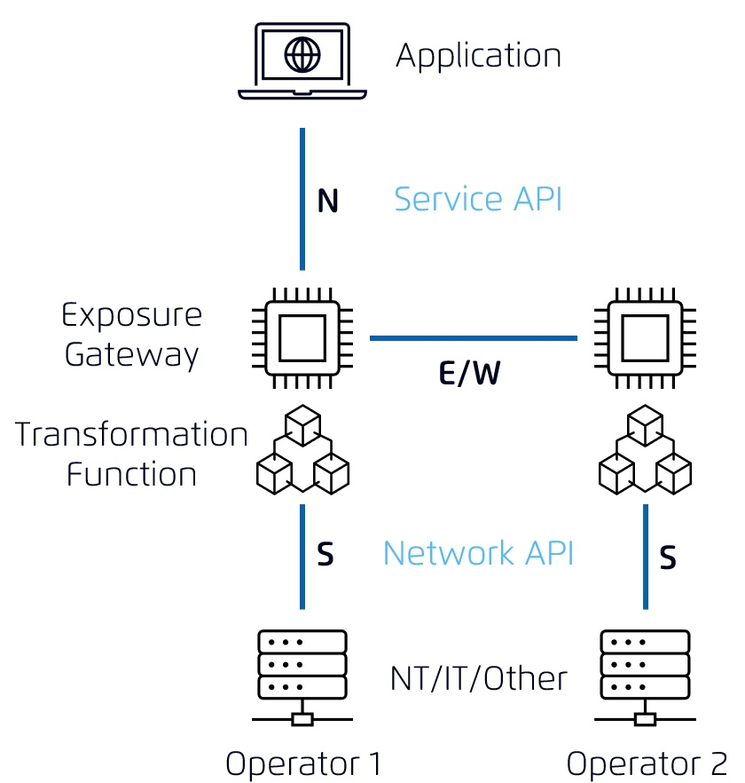

From functional perspective the scope is limited to telco APIs,
that means APIs in the domain of telco mobile networks,
telco fixed line networks or supporting these.
Thereby the focus is on the northbound interface
(between telco operator and aggregator or capability consumer).
To enable API roaming also the east-/westbound interface
(telco operator to telco operator) is considered.
|

|